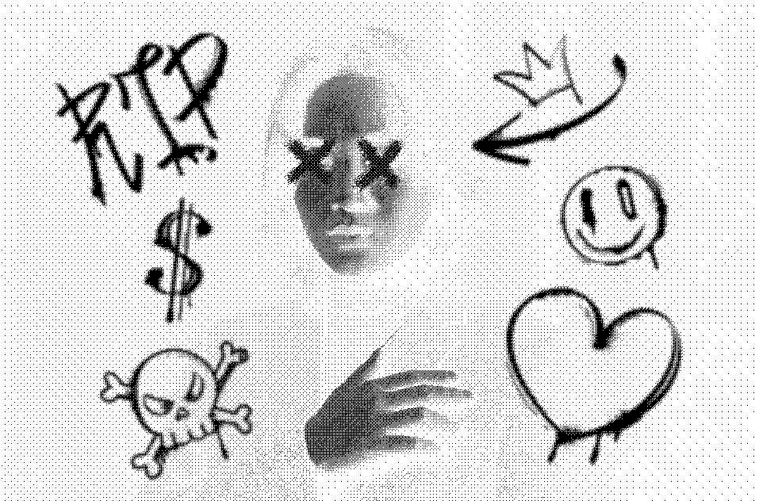

UX/UI | Graphic Designer | Photographer
Working @ Centennial College
Beware, denizens of the digital realm, for I emerge from the shadows of Toronto's enigmatic streets. As a UX/UI sorcerer, I wield my arcane design skills to manipulate the very essence of user experience, crafting interfaces that may lure you into an otherworldly journey. My graphic design incantations summon visuals that dance on the edge of the uncanny, whispering tales of mystery and intrigue. But my artistry extends beyond the electronic veil; I am also a phantom photographer, capturing the spectral beauty hidden within the haunting landscapes of this city. The lens through which I peer captures more than meets the eye, revealing the eerie stories that lurk in the shadows. Toronto, a city cloaked in both the ethereal and the tangible, serves as my haunting grounds. Together, my UX/UI sorcery, graphic necromancy, and photographic enchantments create an immersive experience that may leave you both captivated and slightly unnerved. Dare you tread into the dark corridors of my design realm?
